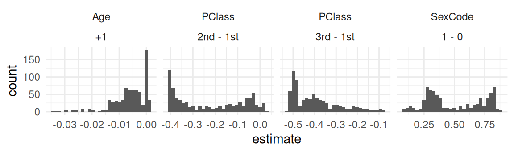
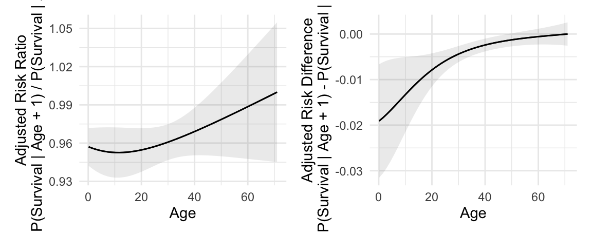
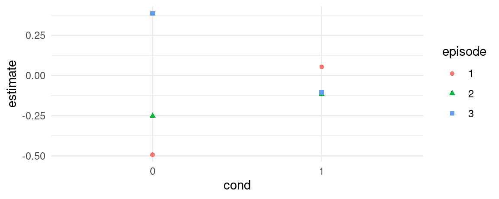
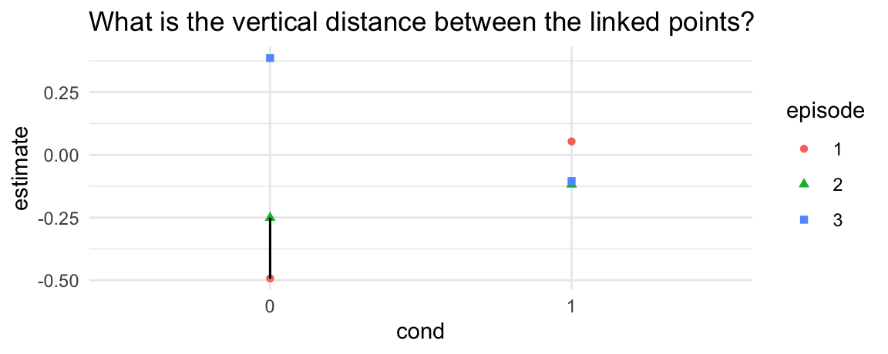
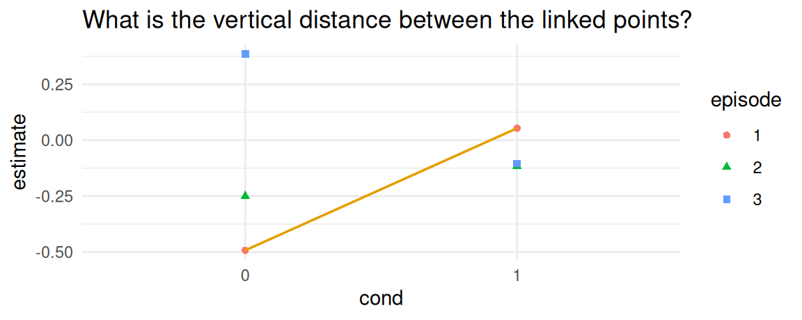
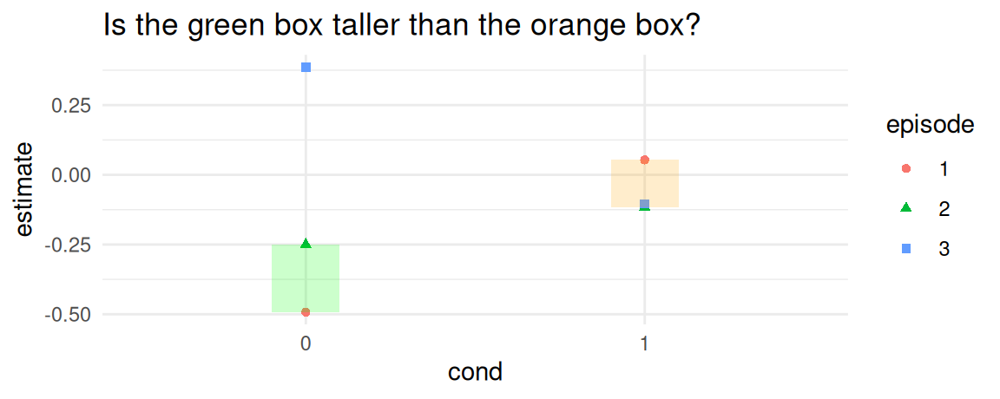

library(marginaleffects)
dat <- "https://vincentarelbundock.github.io/Rdatasets/csv/Stat2Data/Titanic.csv"
dat <- read.csv(dat, na.strings = c("*", ""))
mod <- glm(Survived ~ PClass * SexCode * Age, data = dat, family = binomial)
summary(mod)
#>
#> Call:
#> glm(formula = Survived ~ PClass * SexCode * Age, family = binomial,
#> data = dat)
#>
#> Coefficients:
#> Estimate Std. Error z value Pr(>|z|)
#> (Intercept) 1.505028 0.611076 2.463 0.013781 *
#> PClass2nd 0.223573 0.944492 0.237 0.812880
#> PClass3rd -2.010027 0.791079 -2.541 0.011058 *
#> SexCode 1.005486 1.333850 0.754 0.450956
#> Age -0.054245 0.015029 -3.609 0.000307 ***
#> PClass2nd:SexCode 0.145764 1.771346 0.082 0.934416
#> PClass3rd:SexCode -0.681501 1.487329 -0.458 0.646806
#> PClass2nd:Age -0.089628 0.035118 -2.552 0.010705 *
#> PClass3rd:Age 0.003595 0.025174 0.143 0.886434
#> SexCode:Age 0.066404 0.034396 1.931 0.053531 .
#> PClass2nd:SexCode:Age 0.047776 0.054344 0.879 0.379325
#> PClass3rd:SexCode:Age -0.016443 0.043162 -0.381 0.703224
#> ---
#> Signif. codes: 0 '***' 0.001 '**' 0.01 '*' 0.05 '.' 0.1 ' ' 1
#>
#> (Dispersion parameter for binomial family taken to be 1)
#>
#> Null deviance: 1025.57 on 755 degrees of freedom
#> Residual deviance: 639.64 on 744 degrees of freedom
#> (557 observations deleted due to missingness)
#> AIC: 663.64
#>
#> Number of Fisher Scoring iterations: 6Comparisons
In this vignette, we introduce “comparisons”, defined as:
Comparisons are functions of two or more predictions. Example of comparisons include contrasts, differences, risks ratios, odds, etc.
The comparisons() function is extremely flexible, and it allows users to estimate a vast array of quantities of interest. To describe those quantities, we will break the problem down into in 4 steps:
- Quantity
- Grid
- Aggregation
- Uncertainty
- Test
These steps can be combined, mixed, and matched to define and compute many different estimands. With comparisons, we can answer questions like these:
- Medical Treatment Efficacy: How does probability of survival differ for patients who receive a new medication relative to a placebo?
- Education Policy: How do standardized test scores differ between students who attended preschool programs and those who did not?
- Environmental Conservation: What is the impact of new conseration policies on forest coverage?
- Economic Development: What difference does participation in microfinance programs make on household income?
- Sports Performance: How does the win ratio of teams change after the introduction of a new training regimen?
- Cultural Studies: What is the difference in cultural engagement levels between communities with access to public libraries and those without?
Using the hypothesis argument of the comparisons() function, we will also be able to compare contrasts to one another, answering questions such as:
- Is the effect of an educational intervention on mathematical competency stronger for older or younger students?
- Does a work training program in a carceral setting have a greater effect on the probability of recidivism for first or second time offenders?
In this vignette, we will illustrate these concepts by focusing on variations on this question:
How does the probability of survival (outcome) change if a passenger travels in 1st class vs. 3rd class?
These coefficient estimates are interesting, but difficult to interpret. In many applications, analysts will want to call the comparisons() or avg_comparisons() functions to report more meaningful quantities of interest. The rest of explains in detail how to interpret and customize calls like this one:
avg_comparisons(mod)
#>
#> Term Contrast Estimate Std. Error z Pr(>|z|) S 2.5 % 97.5 %
#> Age +1 -0.00598 0.00109 -5.51 <0.001 24.7 -0.00811 -0.00386
#> PClass 2nd - 1st -0.22484 0.04054 -5.55 <0.001 25.0 -0.30429 -0.14539
#> PClass 3rd - 1st -0.39568 0.04253 -9.30 <0.001 66.0 -0.47904 -0.31231
#> SexCode 1 - 0 0.49731 0.03017 16.48 <0.001 200.3 0.43816 0.55645
#>
#> Columns: term, contrast, estimate, std.error, statistic, p.value, s.value, conf.low, conf.high
#> Type: responseQuantity of interest
To investigate the effect of gender, age, and passenger class on survival aboard the Titanic, we will conduct a series of “comparisons” between predicted outcomes computed for different preditor values. The quantity of interest will vary in two main respects:
- Predictor type
- How does the explanator of interest change?
- Ex: +1 on a numeric variable, or the difference between a factor level and its baseline.
- Comparison type
- How do we compare the two predicted outcomes?
- Ex: difference, ratio, log odds, lift, etc.
- Outcome type
- What is the scale of the response variable?
- Ex: response, link, hazard, etc.
By default, the comparisons() function will estimate the “effect” of different changes for different types of predictors:
- Numeric: Increase of 1 unit.
- Logical: Change from
FALSEtoTRUE. - Factor or character: Changes from the reference to each other level.
Comparison type
The default comparison type in comparisons() is the “difference”, which means that the comparisons() function will typically produce quantities which are often interpreted as a measure of “effect” in applications: risk differences, average treatment effects, G-computation estimates, etc. But comparisons() is not limited to differences, Indeed, it allows analysts to call on many built-in functions for comparison, and also to supply their own.
Differences
By default, the comparisons() function will compare the predicted values by differencing (subtraction). For example, consider a hypothetical Titanic passenger with these characteristics:
passenger <- data.frame(
PClass = "3rd",
Age = 20,
SexCode = 0
)What would happen to the predicted probability of survival if we were to increase the SexCode from 0 to 1? Or increase Age by 1 unit? Or change PClass from “3rd” to “1st”? To answer these questions, we could proceed manually by computing two predictions and then subtracting one from the other:
passenger_0 <- passenger
passenger_1 <- transform(passenger, SexCode = 1)
prediction_0 = predict(mod, newdata = passenger_0, type = "response")
prediction_1 = predict(mod, newdata = passenger_1, type = "response")
prediction_1 - prediction_0
#> 1
#> 0.2716978The result above shows that modifying the SexCode variable of this hypothetical passenger from 0 to 1 increases the predicted probability of survival by about 27 percentage points.
Instead of computing this estimate by hand, we could call comparisons() to get analogous results for all predictors in the model at once:
comparisons(mod, newdata = passenger)
#>
#> Term Contrast Estimate Std. Error z Pr(>|z|) S 2.5 % 97.5 % PClass Age SexCode
#> Age +1 -0.00735 0.0033 -2.23 0.0258 5.3 -0.0138 -0.000887 3rd 20 0
#> PClass 2nd - 1st -0.36282 0.0976 -3.72 <0.001 12.3 -0.5541 -0.171567 3rd 20 0
#> PClass 3rd - 1st -0.42376 0.0871 -4.87 <0.001 19.7 -0.5945 -0.253040 3rd 20 0
#> SexCode 1 - 0 0.27170 0.0588 4.62 <0.001 18.0 0.1565 0.386927 3rd 20 0
#>
#> Columns: rowid, term, contrast, estimate, std.error, statistic, p.value, s.value, conf.low, conf.high, predicted_lo, predicted_hi, predicted, PClass, Age, SexCode, Survived
#> Type: responseRatios
Instead of taking simple differences between adjusted predictions, it can sometimes be useful to compute ratios or other functions of predictions. For example, the adjrr function the Stata software package can compute “adjusted risk ratios”, which are ratios of adjusted predictions. To do this in R, we could use the same predictions we computed above:
prediction_1 / prediction_0
#> 1
#> 2.511484This shows that the predicted probability of survival would be about 2.5% larger if our hypothetical passenger were a woman than a man.
The same result can be obtained by setting the comparison argument:
comparisons(mod, comparison = "ratio", newdata = passenger)
#>
#> Term Contrast Estimate Std. Error z Pr(>|z|) S 2.5 % 97.5 % PClass Age SexCode
#> Age +1 0.959 0.0157 61.20 <0.001 Inf 0.928 0.990 3rd 20 0
#> PClass 2nd / 1st 0.399 0.1035 3.85 <0.001 13.1 0.196 0.602 3rd 20 0
#> PClass 3rd / 1st 0.298 0.0640 4.65 <0.001 18.2 0.172 0.423 3rd 20 0
#> SexCode 1 / 0 2.511 0.5048 4.97 <0.001 20.5 1.522 3.501 3rd 20 0
#>
#> Columns: rowid, term, contrast, estimate, std.error, statistic, p.value, s.value, conf.low, conf.high, predicted_lo, predicted_hi, predicted, PClass, Age, SexCode, Survived
#> Type: responseBuilt-in functions
Beyond differences and ratios, comparisons() supports many other built-in functions to compare predictions, such as log odds ratios, lift, etc. See ?comparisons for a complete list.
These built-in functions allow us convenient access to complex transformations. For example, this code computes the log odds ratio associated with a change in predictors:
comparisons(mod,
comparison = "lnor",
newdata = passenger)
#>
#> Term Contrast Estimate Std. Error z Pr(>|z|) S 2.5 % 97.5 % PClass Age SexCode
#> Age +1 -0.0507 0.0202 -2.51 0.0121 6.4 -0.0902 -0.0111 3rd 20 0
#> PClass ln(odds(2nd) / odds(1st)) -1.5690 0.4491 -3.49 <0.001 11.0 -2.4491 -0.6888 3rd 20 0
#> PClass ln(odds(3rd) / odds(1st)) -1.9381 0.3977 -4.87 <0.001 19.8 -2.7177 -1.1586 3rd 20 0
#> SexCode ln(odds(1) / odds(0)) 1.3232 0.2883 4.59 <0.001 17.8 0.7582 1.8882 3rd 20 0
#>
#> Columns: rowid, term, contrast, estimate, std.error, statistic, p.value, s.value, conf.low, conf.high, predicted_lo, predicted_hi, predicted, PClass, Age, SexCode, Survived
#> Type: responseCustom functions
Analysts who need more flexibility can define their own comparison functions. For example, these two calls are equivalent:
comparisons(mod,
comparison = function(hi, lo) hi / lo,
newdata = passenger)
#>
#> Term Contrast Estimate Std. Error z Pr(>|z|) S 2.5 % 97.5 % PClass Age SexCode
#> Age +1 0.959 0.0157 61.20 <0.001 Inf 0.928 0.990 3rd 20 0
#> PClass 2nd, 1st 0.399 0.1035 3.85 <0.001 13.1 0.196 0.602 3rd 20 0
#> PClass 3rd, 1st 0.298 0.0640 4.65 <0.001 18.2 0.172 0.423 3rd 20 0
#> SexCode 1, 0 2.511 0.5048 4.97 <0.001 20.5 1.522 3.501 3rd 20 0
#>
#> Columns: rowid, term, contrast, estimate, std.error, statistic, p.value, s.value, conf.low, conf.high, predicted_lo, predicted_hi, predicted, PClass, Age, SexCode, Survived
#> Type: response
comparisons(mod,
comparison = function(hi, lo) hi / lo,
newdata = passenger)
#>
#> Term Contrast Estimate Std. Error z Pr(>|z|) S 2.5 % 97.5 % PClass Age SexCode
#> Age +1 0.959 0.0157 61.20 <0.001 Inf 0.928 0.990 3rd 20 0
#> PClass 2nd, 1st 0.399 0.1035 3.85 <0.001 13.1 0.196 0.602 3rd 20 0
#> PClass 3rd, 1st 0.298 0.0640 4.65 <0.001 18.2 0.172 0.423 3rd 20 0
#> SexCode 1, 0 2.511 0.5048 4.97 <0.001 20.5 1.522 3.501 3rd 20 0
#>
#> Columns: rowid, term, contrast, estimate, std.error, statistic, p.value, s.value, conf.low, conf.high, predicted_lo, predicted_hi, predicted, PClass, Age, SexCode, Survived
#> Type: responseThis mechanism is powerful, because it lets users create fully customized contrasts. Here is a non-sensical example:
comparisons(mod,
comparison = function(hi, lo) sqrt(hi) / log(lo + 10),
newdata = passenger)
#>
#> Term Contrast Estimate Std. Error z Pr(>|z|) S 2.5 % 97.5 % PClass Age SexCode
#> Age +1 0.179 0.0145 12.36 <0.001 114.2 0.151 0.207 3rd 20 0
#> PClass 2nd, 1st 0.208 0.0230 9.04 <0.001 62.4 0.163 0.253 3rd 20 0
#> PClass 3rd, 1st 0.180 0.0150 11.97 <0.001 107.3 0.150 0.209 3rd 20 0
#> SexCode 1, 0 0.290 0.0162 17.85 <0.001 234.4 0.258 0.321 3rd 20 0
#>
#> Columns: rowid, term, contrast, estimate, std.error, statistic, p.value, s.value, conf.low, conf.high, predicted_lo, predicted_hi, predicted, PClass, Age, SexCode, Survived
#> Type: responsePredictor types
The types of comparisons that one might care about depend on the kinds of predictors in our model: numeric, binary, or categorical.
Numeric
We can also compute contrasts for differences in numeric variables. For example, we can see what happens to the adjusted predictions when we increment the Age variable by 1 unit (default) or by 5 units:
comparisons(mod, variables = "Age", newdata = passenger)
#>
#> Term Contrast Estimate Std. Error z Pr(>|z|) S 2.5 % 97.5 % PClass Age SexCode
#> Age +1 -0.00735 0.0033 -2.23 0.0258 5.3 -0.0138 -0.000887 3rd 20 0
#>
#> Columns: rowid, term, contrast, estimate, std.error, statistic, p.value, s.value, conf.low, conf.high, predicted_lo, predicted_hi, predicted, PClass, Age, SexCode, Survived
#> Type: response
comparisons(mod, variables = list(Age = 5), newdata = passenger)
#>
#> Term Contrast Estimate Std. Error z Pr(>|z|) S 2.5 % 97.5 % PClass Age SexCode
#> Age +5 -0.0344 0.0146 -2.35 0.0188 5.7 -0.0631 -0.00569 3rd 20 0
#>
#> Columns: rowid, term, contrast, estimate, std.error, statistic, p.value, s.value, conf.low, conf.high, predicted_lo, predicted_hi, predicted, PClass, Age, SexCode, Survived
#> Type: responseCompare adjusted predictions for a change in the regressor between two arbitrary values:
comparisons(mod, variables = list(Age = c(5, 60)), newdata = passenger)
#>
#> Term Contrast Estimate Std. Error z Pr(>|z|) S 2.5 % 97.5 % PClass Age SexCode
#> Age 60 - 5 -0.291 0.106 -2.75 0.00595 7.4 -0.498 -0.0836 3rd 20 0
#>
#> Columns: rowid, term, contrast, estimate, std.error, statistic, p.value, s.value, conf.low, conf.high, predicted_lo, predicted_hi, predicted, PClass, Age, SexCode, Survived
#> Type: responseCompare adjusted predictions when the regressor changes across the interquartile range, across one or two standard deviations about its mean, or from across its full range:
comparisons(mod, variables = list(Age = "iqr"), newdata = passenger)
#>
#> Term Contrast Estimate Std. Error z Pr(>|z|) S 2.5 % 97.5 % PClass Age SexCode
#> Age Q3 - Q1 -0.0952 0.0319 -2.98 0.00284 8.5 -0.158 -0.0327 3rd 20 0
#>
#> Columns: rowid, term, contrast, estimate, std.error, statistic, p.value, s.value, conf.low, conf.high, predicted_lo, predicted_hi, predicted, PClass, Age, SexCode, Survived
#> Type: response
comparisons(mod, variables = list(Age = "sd"), newdata = passenger)
#>
#> Term Contrast Estimate Std. Error z Pr(>|z|) S 2.5 % 97.5 % PClass Age SexCode
#> Age (x + sd/2) - (x - sd/2) -0.0739 0.0241 -3.07 0.00217 8.8 -0.121 -0.0267 3rd 20 0
#>
#> Columns: rowid, term, contrast, estimate, std.error, statistic, p.value, s.value, conf.low, conf.high, predicted_lo, predicted_hi, predicted, PClass, Age, SexCode, Survived
#> Type: response
comparisons(mod, variables = list(Age = "2sd"), newdata = passenger)
#>
#> Term Contrast Estimate Std. Error z Pr(>|z|) S 2.5 % 97.5 % PClass Age SexCode
#> Age (x + sd) - (x - sd) -0.151 0.0519 -2.92 0.00355 8.1 -0.253 -0.0496 3rd 20 0
#>
#> Columns: rowid, term, contrast, estimate, std.error, statistic, p.value, s.value, conf.low, conf.high, predicted_lo, predicted_hi, predicted, PClass, Age, SexCode, Survived
#> Type: response
comparisons(mod, variables = list(Age = "minmax"), newdata = passenger)
#>
#> Term Contrast Estimate Std. Error z Pr(>|z|) S 2.5 % 97.5 % PClass Age SexCode
#> Age Max - Min -0.358 0.13 -2.75 0.00601 7.4 -0.614 -0.103 3rd 20 0
#>
#> Columns: rowid, term, contrast, estimate, std.error, statistic, p.value, s.value, conf.low, conf.high, predicted_lo, predicted_hi, predicted, PClass, Age, SexCode, Survived
#> Type: responseBinary or Logical
For logical or binary variables, the default comparison correponds to a change from 0 to 1, or from FALSE to TRUE:
dat2 <- transform(dat, SexCode = as.logical(SexCode))
mod2 <- glm(Survived ~ PClass * SexCode * Age, data = dat2, family = binomial)
comparisons(mod, variables = "SexCode", newdata = passenger)
#>
#> Term Contrast Estimate Std. Error z Pr(>|z|) S 2.5 % 97.5 % PClass Age SexCode
#> SexCode 1 - 0 0.272 0.0588 4.62 <0.001 18.0 0.156 0.387 3rd 20 0
#>
#> Columns: rowid, term, contrast, estimate, std.error, statistic, p.value, s.value, conf.low, conf.high, predicted_lo, predicted_hi, predicted, PClass, Age, SexCode, Survived
#> Type: response
comparisons(mod2, variables = "SexCode", newdata = passenger)
#>
#> Term Contrast Estimate Std. Error z Pr(>|z|) S 2.5 % 97.5 % PClass Age SexCode
#> SexCode TRUE - FALSE 0.272 0.0588 4.62 <0.001 18.0 0.156 0.387 3rd 20 0
#>
#> Columns: rowid, term, contrast, estimate, std.error, statistic, p.value, s.value, conf.low, conf.high, predicted_lo, predicted_hi, predicted, PClass, Age, SexCode, Survived
#> Type: responseFactor or Character
The comparisons() function automatically computes contrasts for each level of a categorical variable (factor or character), relative to the baseline category, while holding all other values at their observed values. We can obtain different contrasts by using the variables argument:
comparisons(mod, variables = list(PClass = "sequential"), newdata = passenger)
#>
#> Term Contrast Estimate Std. Error z Pr(>|z|) S 2.5 % 97.5 % PClass Age SexCode
#> PClass 2nd - 1st -0.3628 0.0976 -3.718 <0.001 12.3 -0.554 -0.1716 3rd 20 0
#> PClass 3rd - 2nd -0.0609 0.0611 -0.997 0.319 1.6 -0.181 0.0589 3rd 20 0
#>
#> Columns: rowid, term, contrast, estimate, std.error, statistic, p.value, s.value, conf.low, conf.high, predicted_lo, predicted_hi, predicted, PClass, Age, SexCode, Survived
#> Type: response
comparisons(mod, variables = list(PClass = "pairwise"), newdata = passenger)
#>
#> Term Contrast Estimate Std. Error z Pr(>|z|) S 2.5 % 97.5 % PClass Age SexCode
#> PClass 2nd - 1st -0.3628 0.0976 -3.718 <0.001 12.3 -0.554 -0.1716 3rd 20 0
#> PClass 3rd - 1st -0.4238 0.0871 -4.865 <0.001 19.7 -0.594 -0.2530 3rd 20 0
#> PClass 3rd - 2nd -0.0609 0.0611 -0.997 0.319 1.6 -0.181 0.0589 3rd 20 0
#>
#> Columns: rowid, term, contrast, estimate, std.error, statistic, p.value, s.value, conf.low, conf.high, predicted_lo, predicted_hi, predicted, PClass, Age, SexCode, Survived
#> Type: response
comparisons(mod, variables = list(PClass = "reference"), newdata = passenger)
#>
#> Term Contrast Estimate Std. Error z Pr(>|z|) S 2.5 % 97.5 % PClass Age SexCode
#> PClass 2nd - 1st -0.363 0.0976 -3.72 <0.001 12.3 -0.554 -0.172 3rd 20 0
#> PClass 3rd - 1st -0.424 0.0871 -4.87 <0.001 19.7 -0.594 -0.253 3rd 20 0
#>
#> Columns: rowid, term, contrast, estimate, std.error, statistic, p.value, s.value, conf.low, conf.high, predicted_lo, predicted_hi, predicted, PClass, Age, SexCode, Survived
#> Type: responseWe can also specify a particular contrast of interest in variables:
comparisons(mod,
variables = list(PClass = c("3rd", "1st")),
newdata = passenger)
#>
#> Term Contrast Estimate Std. Error z Pr(>|z|) S 2.5 % 97.5 % PClass Age SexCode
#> PClass 1st - 3rd 0.424 0.0871 4.87 <0.001 19.7 0.253 0.594 3rd 20 0
#>
#> Columns: rowid, term, contrast, estimate, std.error, statistic, p.value, s.value, conf.low, conf.high, predicted_lo, predicted_hi, predicted, PClass, Age, SexCode, Survived
#> Type: responseCross-contrasts
In other contexts, we are interested in a “cross-contrast” or “cross-comparisons”, that is, we would like to know what happens when two (or more) predictors change at the same time. To assess this, we can specify the regressors of interest in the variables argument, and set the cross=TRUE.
cmp <- comparisons(mod,
variables = list(SexCode = 0:1, Age = 5),
cross = TRUE,
newdata = passenger)
cmp
#>
#> Estimate Std. Error z Pr(>|z|) S 2.5 % 97.5 % C: Age C: SexCode PClass Age SexCode
#> 0.271 0.0584 4.64 <0.001 18.1 0.156 0.385 +5 1 - 0 3rd 20 0
#>
#> Columns: rowid, term, contrast_Age, contrast_SexCode, estimate, std.error, statistic, p.value, s.value, conf.low, conf.high, predicted_lo, predicted_hi, predicted, PClass, Age, Survived, SexCode
#> Type: responseThis tells us that changing our hypothetical passenger from SexCode=0 to 1, and from Age=20 to 25 simultaneously is associated with a change of 0.27 in the predicted probability of survival (on a 0 to 1 scale).
Outcome type
We can compute contrasts on different response scales. In GLM model, for example, we tend to estimate contrasts and comparisons on the “response” scale, becasue the results are expressed on the natural unit of measurement of the dependent variable. However, we an also compute the quantity on the “link” scale, by changing the type argument:
comparisons(mod, type = "response", newdata = passenger)
#>
#> Term Contrast Estimate Std. Error z Pr(>|z|) S 2.5 % 97.5 % PClass Age SexCode
#> Age +1 -0.00735 0.0033 -2.23 0.0258 5.3 -0.0138 -0.000887 3rd 20 0
#> PClass 2nd - 1st -0.36282 0.0976 -3.72 <0.001 12.3 -0.5541 -0.171567 3rd 20 0
#> PClass 3rd - 1st -0.42376 0.0871 -4.87 <0.001 19.7 -0.5945 -0.253040 3rd 20 0
#> SexCode 1 - 0 0.27170 0.0588 4.62 <0.001 18.0 0.1565 0.386927 3rd 20 0
#>
#> Columns: rowid, term, contrast, estimate, std.error, statistic, p.value, s.value, conf.low, conf.high, predicted_lo, predicted_hi, predicted, PClass, Age, SexCode, Survived
#> Type: response
comparisons(mod, type = "link", newdata = passenger)
#>
#> Term Contrast Estimate Std. Error z Pr(>|z|) S 2.5 % 97.5 % PClass Age SexCode
#> Age +1 -0.0507 0.0202 -2.51 0.0121 6.4 -0.0902 -0.0111 3rd 20 0
#> PClass 2nd - 1st -1.5690 0.4491 -3.49 <0.001 11.0 -2.4491 -0.6888 3rd 20 0
#> PClass 3rd - 1st -1.9381 0.3977 -4.87 <0.001 19.8 -2.7177 -1.1586 3rd 20 0
#> SexCode 1 - 0 1.3232 0.2883 4.59 <0.001 17.8 0.7582 1.8882 3rd 20 0
#>
#> Columns: rowid, term, contrast, estimate, std.error, statistic, p.value, s.value, conf.low, conf.high, predicted_lo, predicted_hi, predicted, PClass, Age, SexCode, Survived
#> Type: linkThe support type values depend on the kind of fitted model at hand. Supported types for a specific model are printed to screen when a bad type is entered:
comparisons(mod, type = "bad type name")
#> Error in sanitize_type(model = model, type = type, calling_function = "comparisons"): Assertion on 'type' failed: Must be element of set {'response','link'}, but is 'bad type name'.Grid
In most statistical models, comparisons (differences, ratios, etc.) are conditional quantities, in the sense that they typically depend on the values of all the predictors in the model. Therefore, when we compute a comparison, we need to decide where to evaluate it in the predictor space.
A “profile” is a combination of values of the predictor variables in a model. A “grid” is a collection of one or more profiles. You can think of a “grid” as different rows in a dataset, where each row contains the information necessary to predict the outcome for one individual or unit of observation.
A “profile” can be defined as a specific combination of predictor values, and a “grid” can be defined as a collection of profiles for which we can evaluate quantities of interest.
There are many possible grids:
- Empirical distribution
- User-specified values
- Representative values
Empirical distribution
By default, the comparisons() function returns estimates for every single row of the original data frame which was used to fit the model. The Titanic dataset includes 756 complete observations (after dropping missing data), so this command will yield 756 estimates:
comparisons(mod, variables = "Age")
#>
#> Term Contrast Estimate Std. Error z Pr(>|z|) S 2.5 % 97.5 %
#> Age +1 0.000618 0.00169 0.365 0.71479 0.5 -0.00270 0.00393
#> Age +1 0.000823 0.00283 0.291 0.77092 0.4 -0.00472 0.00636
#> Age +1 -0.013485 0.00386 -3.493 < 0.001 11.0 -0.02105 -0.00592
#> Age +1 0.000645 0.00183 0.352 0.72511 0.5 -0.00295 0.00424
#> Age +1 -0.008463 0.00117 -7.217 < 0.001 40.8 -0.01076 -0.00616
#> --- 746 rows omitted. See ?avg_comparisons and ?print.marginaleffects ---
#> Age +1 -0.005742 0.00207 -2.774 0.00554 7.5 -0.00980 -0.00168
#> Age +1 -0.005959 0.00223 -2.673 0.00753 7.1 -0.01033 -0.00159
#> Age +1 -0.006871 0.00292 -2.350 0.01877 5.7 -0.01260 -0.00114
#> Age +1 -0.006407 0.00257 -2.496 0.01255 6.3 -0.01144 -0.00138
#> Age +1 -0.005321 0.00177 -3.006 0.00264 8.6 -0.00879 -0.00185
#> Columns: rowid, term, contrast, estimate, std.error, statistic, p.value, s.value, conf.low, conf.high, predicted_lo, predicted_hi, predicted, Survived, PClass, SexCode, Age
#> Type: responseIf we do not specify the variables argument, comparisons() computes 4 distinct contrasts for all the variables, so we get \(4\\times 756=3024\) rows:
comparisons(mod)
#>
#> Term Contrast Estimate Std. Error z Pr(>|z|) S 2.5 % 97.5 %
#> Age +1 0.000618 0.00169 0.365 0.715 0.5 -0.00270 0.00393
#> Age +1 0.000823 0.00283 0.291 0.771 0.4 -0.00472 0.00636
#> Age +1 -0.013485 0.00386 -3.493 <0.001 11.0 -0.02105 -0.00592
#> Age +1 0.000645 0.00183 0.352 0.725 0.5 -0.00295 0.00424
#> Age +1 -0.008463 0.00117 -7.217 <0.001 40.8 -0.01076 -0.00616
#> --- 3014 rows omitted. See ?avg_comparisons and ?print.marginaleffects ---
#> SexCode 1 - 0 0.317013 0.05762 5.501 <0.001 24.7 0.20407 0.42995
#> SexCode 1 - 0 0.311224 0.05657 5.502 <0.001 24.7 0.20035 0.42210
#> SexCode 1 - 0 0.285811 0.05627 5.080 <0.001 21.3 0.17553 0.39609
#> SexCode 1 - 0 0.298977 0.05557 5.380 <0.001 23.7 0.19005 0.40790
#> SexCode 1 - 0 0.327942 0.06066 5.406 <0.001 23.9 0.20905 0.44684
#> Columns: rowid, term, contrast, estimate, std.error, statistic, p.value, s.value, conf.low, conf.high, predicted_lo, predicted_hi, predicted, Survived, PClass, SexCode, Age
#> Type: responseWe can plot the full distribution of unit-specific contrasts easily:
library(ggplot2)
comparisons(mod) |>
ggplot(aes(x = estimate)) +
geom_histogram(bins = 30) +
facet_grid(. ~ term + contrast, scales = "free")
The plot above suggests that there is substantial heterogeneity in treatment effects across different unit characteristics.
User-specified values
In some contexts, it is interesting to estimate a contrast for a specific individual with characteristics of interest. To achieve this, we can supply a data frame to the newdata argument.
This code shows the expected change in probability of survival in the counterfactual world where Mr Harry Anderson had been 20 years older:
unit <- subset(dat, Name == "Anderson, Mr Harry")
comparisons(mod, newdata = unit)
#>
#> Term Contrast Estimate Std. Error z Pr(>|z|) S 2.5 % 97.5 % rownames Name PClass Age Sex SexCode
#> Age +1 -0.0103 0.00239 -4.31 <0.001 15.9 -0.015 -0.00562 6 Anderson, Mr Harry 1st 47 male 0
#> PClass 2nd - 1st -0.2538 0.04630 -5.48 <0.001 24.5 -0.345 -0.16307 6 Anderson, Mr Harry 1st 47 male 0
#> PClass 3rd - 1st -0.2074 0.05290 -3.92 <0.001 13.5 -0.311 -0.10372 6 Anderson, Mr Harry 1st 47 male 0
#> SexCode 1 - 0 0.6959 0.05207 13.37 <0.001 132.9 0.594 0.79791 6 Anderson, Mr Harry 1st 47 male 0
#>
#> Columns: rowid, term, contrast, estimate, std.error, statistic, p.value, s.value, conf.low, conf.high, predicted_lo, predicted_hi, predicted, rownames, Name, PClass, Age, Sex, Survived, SexCode
#> Type: responseA very convenient way to create grids of units with specific predictor values is to the datagrid() function from the marginaleffects package. With this function, we can specify exactly where we want to evaluate the comparison in the predictor space. Say we are interested in:
The effect of changing passenger class on the predicted probability of survival for a 50 year old man and a 50 year old woman.
We can type:
comparisons(mod,
variables = "PClass",
newdata = datagrid(Age = 50, SexCode = 0:1))
#>
#> Term Contrast Age SexCode Estimate Std. Error z Pr(>|z|) S 2.5 % 97.5 % PClass
#> PClass 2nd - 1st 50 0 -0.226 0.0473 -4.78 <0.001 19.1 -0.319 -0.1333 3rd
#> PClass 2nd - 1st 50 1 -0.156 0.1034 -1.51 0.131 2.9 -0.359 0.0465 3rd
#> PClass 3rd - 1st 50 0 -0.184 0.0535 -3.45 <0.001 10.8 -0.289 -0.0796 3rd
#> PClass 3rd - 1st 50 1 -0.511 0.1242 -4.12 <0.001 14.7 -0.755 -0.2679 3rd
#>
#> Columns: rowid, term, contrast, estimate, std.error, statistic, p.value, s.value, conf.low, conf.high, Age, SexCode, predicted_lo, predicted_hi, predicted, Survived, PClass
#> Type: responseNotice that the contrasts are different for the man and the woman. It appears that changing class has a larger effect on the expected probability of survival for men than for women.
Note that when using datagrid() in this manner, variables that are not specified explicitly by the user are held at their mean or mode.
Representative values
An alternative which used to be very common but has now fallen into a bit of disfavor is to compute “Contrasts at the mean.” The idea is to create a “representative” or “synthetic” individual (row of the dataset) whose characteristics are completely average (or modal). Then, we compute and report the contrast for this specific hypothetical individual. For example:
comparisons(mod, newdata = "mean")
#>
#> Term Contrast Estimate Std. Error z Pr(>|z|) S 2.5 % 97.5 % PClass SexCode Age
#> Age +1 -0.00504 0.00158 -3.20 0.00139 9.5 -0.00813 -0.00195 3rd 0 30.4
#> PClass 2nd - 1st -0.39777 0.06378 -6.24 < 0.001 31.1 -0.52278 -0.27277 3rd 0 30.4
#> PClass 3rd - 1st -0.34949 0.06333 -5.52 < 0.001 24.8 -0.47361 -0.22537 3rd 0 30.4
#> SexCode 1 - 0 0.33509 0.06340 5.29 < 0.001 22.9 0.21083 0.45935 3rd 0 30.4
#>
#> Columns: rowid, term, contrast, estimate, std.error, statistic, p.value, s.value, conf.low, conf.high, predicted_lo, predicted_hi, predicted, Survived, PClass, SexCode, Age
#> Type: response
comparisons(mod, newdata = "mean")
#>
#> Term Contrast Estimate Std. Error z Pr(>|z|) S 2.5 % 97.5 % PClass SexCode Age
#> Age +1 -0.00504 0.00158 -3.20 0.00139 9.5 -0.00813 -0.00195 3rd 0 30.4
#> PClass 2nd - 1st -0.39777 0.06378 -6.24 < 0.001 31.1 -0.52278 -0.27277 3rd 0 30.4
#> PClass 3rd - 1st -0.34949 0.06333 -5.52 < 0.001 24.8 -0.47361 -0.22537 3rd 0 30.4
#> SexCode 1 - 0 0.33509 0.06340 5.29 < 0.001 22.9 0.21083 0.45935 3rd 0 30.4
#>
#> Columns: rowid, term, contrast, estimate, std.error, statistic, p.value, s.value, conf.low, conf.high, predicted_lo, predicted_hi, predicted, Survived, PClass, SexCode, Age
#> Type: responseContrasts at the mean can differ substantially from average contrasts.
The advantage of this approach is that it is very cheap and fast computationally. The disadvantage is that the interpretation is somewhat ambiguous. Often times, there simply does not exist an individual who is perfectly average across all dimensions of the dataset. It is also not clear why the analyst should be particularly interested in the contrast for this one, synthetic, perfectly average individual.
Balanced grids
One type of grid which may be particularly useful in experimental setting is the “balanced grid”, which includes all unique combinations of categorical variables, while holding numeric variables a their means. For example, in the Titanic dataset there are two categorical variables, SexCode and PClass, with 2 and 3 categories respectively. A balanced grid, will thus have rows. We can create this grid with:
datagrid(model = mod, grid_type = "balanced")
#> Survived PClass SexCode Age
#> 1 1 1st 1 30.39799
#> 2 1 1st 0 30.39799
#> 3 1 2nd 1 30.39799
#> 4 1 2nd 0 30.39799
#> 5 1 3rd 1 30.39799
#> 6 1 3rd 0 30.39799
#> 7 0 1st 1 30.39799
#> 8 0 1st 0 30.39799
#> 9 0 2nd 1 30.39799
#> 10 0 2nd 0 30.39799
#> 11 0 3rd 1 30.39799
#> 12 0 3rd 0 30.39799When using datagrid() inside a comparisons() call, we do not need to specify the model argument manually:
comparisons(mod,
variables = "SexCode",
newdata = datagrid(grid_type = "balanced"))
#>
#> Term Contrast Estimate Std. Error z Pr(>|z|) S 2.5 % 97.5 % PClass SexCode Age
#> SexCode 1 - 0 0.483 0.0631 7.65 <0.001 45.5 0.359 0.606 1st 1 30.4
#> SexCode 1 - 0 0.483 0.0631 7.65 <0.001 45.5 0.359 0.606 1st 0 30.4
#> SexCode 1 - 0 0.812 0.0447 18.18 <0.001 243.0 0.725 0.900 2nd 1 30.4
#> SexCode 1 - 0 0.812 0.0447 18.18 <0.001 243.0 0.725 0.900 2nd 0 30.4
#> SexCode 1 - 0 0.335 0.0634 5.29 <0.001 22.9 0.211 0.459 3rd 1 30.4
#> SexCode 1 - 0 0.335 0.0634 5.29 <0.001 22.9 0.211 0.459 3rd 0 30.4
#> SexCode 1 - 0 0.483 0.0631 7.65 <0.001 45.5 0.359 0.606 1st 1 30.4
#> SexCode 1 - 0 0.483 0.0631 7.65 <0.001 45.5 0.359 0.606 1st 0 30.4
#> SexCode 1 - 0 0.812 0.0447 18.18 <0.001 243.0 0.725 0.900 2nd 1 30.4
#> SexCode 1 - 0 0.812 0.0447 18.18 <0.001 243.0 0.725 0.900 2nd 0 30.4
#> SexCode 1 - 0 0.335 0.0634 5.29 <0.001 22.9 0.211 0.459 3rd 1 30.4
#> SexCode 1 - 0 0.335 0.0634 5.29 <0.001 22.9 0.211 0.459 3rd 0 30.4
#>
#> Columns: rowid, term, contrast, estimate, std.error, statistic, p.value, s.value, conf.low, conf.high, predicted_lo, predicted_hi, predicted, Survived, PClass, SexCode, Age
#> Type: responseAggregation
As discussed above, the default behavior of comparisons() is to estimate quantities of interest for all the actually observed units in our dataset. Sometimes, it is convenient to marginalize those conditional estimates, in order to obtain an “average contrast”. The procedure is as follows:
- Compute estimates for each row of the original dataset.
- Average the estimates across the whole dataset, or within subgroups.
To average estimates, we call the same function as before, with the previx avg_, and possibly with the by argument:
avg_comparisons(mod)
#>
#> Term Contrast Estimate Std. Error z Pr(>|z|) S 2.5 % 97.5 %
#> Age +1 -0.00598 0.00109 -5.51 <0.001 24.7 -0.00811 -0.00386
#> PClass 2nd - 1st -0.22484 0.04054 -5.55 <0.001 25.0 -0.30429 -0.14539
#> PClass 3rd - 1st -0.39568 0.04253 -9.30 <0.001 66.0 -0.47904 -0.31231
#> SexCode 1 - 0 0.49731 0.03017 16.48 <0.001 200.3 0.43816 0.55645
#>
#> Columns: term, contrast, estimate, std.error, statistic, p.value, s.value, conf.low, conf.high
#> Type: responseThis is equivalent to:
cmp <- comparisons(mod)
mean(cmp$estimate[cmp$term == "Age"])
#> [1] -0.00598373
aggregate(estimate ~ term + contrast, data = cmp, FUN = mean)
#> term contrast estimate
#> 1 Age +1 -0.00598373
#> 2 SexCode 1 - 0 0.49730674
#> 3 PClass 2nd - 1st -0.22483577
#> 4 PClass 3rd - 1st -0.39567579Subgroups
Using the by argument we can compute the “average effect” (i.e., “contrast” or “risk difference”) of an increase of 10 years of Age in each of the passenger classes:
avg_comparisons(mod,
variables = list(Age = 10),
by = "PClass")
#>
#> Term Contrast PClass Estimate Std. Error z Pr(>|z|) S 2.5 % 97.5 %
#> Age mean(+10) 1st -0.0524 0.0129 -4.08 <0.001 14.4 -0.0776 -0.02725
#> Age mean(+10) 2nd -0.0718 0.0164 -4.39 <0.001 16.4 -0.1039 -0.03976
#> Age mean(+10) 3rd -0.0359 0.0178 -2.02 0.0433 4.5 -0.0708 -0.00108
#>
#> Columns: term, contrast, PClass, estimate, std.error, statistic, p.value, s.value, conf.low, conf.high, predicted_lo, predicted_hi, predicted
#> Type: responseMarginal means
In experimental studies, it can often make sense to estimate contrasts, averaged across a balanced grid of treatment conditions:
avg_comparisons(mod, newdata = datagrid(grid_type = "balanced"))
#>
#> Term Contrast Estimate Std. Error z Pr(>|z|) S 2.5 % 97.5 %
#> Age +1 -0.00494 0.00119 -4.14 <0.001 14.8 -0.00728 -0.0026
#> PClass 2nd - 1st -0.23312 0.03865 -6.03 <0.001 29.2 -0.30887 -0.1574
#> PClass 3rd - 1st -0.42333 0.04472 -9.47 <0.001 68.2 -0.51098 -0.3357
#> SexCode 1 - 0 0.54331 0.03332 16.30 <0.001 196.1 0.47800 0.6086
#>
#> Columns: term, contrast, estimate, std.error, statistic, p.value, s.value, conf.low, conf.high
#> Type: responseNote that the results are slightly different than when averaging across the empirical, because the number of actual passengers aboard the Titanic was not perfectly balanced across gender and ticket categories:
avg_comparisons(mod)
#>
#> Term Contrast Estimate Std. Error z Pr(>|z|) S 2.5 % 97.5 %
#> Age +1 -0.00598 0.00109 -5.51 <0.001 24.7 -0.00811 -0.00386
#> PClass 2nd - 1st -0.22484 0.04054 -5.55 <0.001 25.0 -0.30429 -0.14539
#> PClass 3rd - 1st -0.39568 0.04253 -9.30 <0.001 66.0 -0.47904 -0.31231
#> SexCode 1 - 0 0.49731 0.03017 16.48 <0.001 200.3 0.43816 0.55645
#>
#> Columns: term, contrast, estimate, std.error, statistic, p.value, s.value, conf.low, conf.high
#> Type: responseUncertainty
By default, the standard errors around contrasts are computed using the delta method. This vignette offers extensive discussion and examples:
https://marginaleffects.com/vignettes/uncertainty.html
Robust (clustered) standard errors
The standard errors reported by default for most models are “classical” (or “iid”). For models supported by the sandwich or clubSandwich packages, we can call on the vcov argument to report robust standard errors (and confidence intervales, p values, etc.):
Classical:
avg_comparisons(mod, variables = "SexCode")
#>
#> Term Contrast Estimate Std. Error z Pr(>|z|) S 2.5 % 97.5 %
#> SexCode 1 - 0 0.497 0.0302 16.5 <0.001 200.3 0.438 0.556
#>
#> Columns: term, contrast, estimate, std.error, statistic, p.value, s.value, conf.low, conf.high
#> Type: responseHeteroskedasticity-robust:
avg_comparisons(mod, vcov = "HC3", variables = "SexCode")
#>
#> Term Contrast Estimate Std. Error z Pr(>|z|) S 2.5 % 97.5 %
#> SexCode 1 - 0 0.497 0.0306 16.2 <0.001 194.7 0.437 0.557
#>
#> Columns: term, contrast, estimate, std.error, statistic, p.value, s.value, conf.low, conf.high
#> Type: responseBootstrap and simulation
We can use bootstrapping or simulations to compute uncertainty estimates, via the inferences() function. Notice that, for some quantities, the classical intervals are very different (here: symmetric) than boostrap intervals (here: asymmetric):
# classical
avg_comparisons(mod, comparison = "lnor", variables = "SexCode")
#>
#> Term Contrast Estimate Std. Error z Pr(>|z|) S 2.5 % 97.5 %
#> SexCode ln(odds(1) / odds(0)) 2.98 0.243 12.3 <0.001 112.8 2.51 3.46
#>
#> Columns: term, contrast, estimate, std.error, statistic, p.value, s.value, conf.low, conf.high
#> Type: response
# bootstrap
avg_comparisons(mod, comparison = "lnor", variables = "SexCode") |>
inferences("rsample")
#>
#> Term Contrast Estimate 2.5 % 97.5 %
#> SexCode ln(odds(1) / odds(0)) 2.98 2.64 7.64
#>
#> Columns: term, contrast, estimate, conf.low, conf.high
#> Type: responseTransformation
By default, the standard errors around contrasts are computed on the scale determined by the type argument (e.g., “link” or “response”). Some analysts may prefer to proceed differently. For example, in Stata, the adjrr computes adjusted risk ratios (ARR) in two steps:
- Compute the natural log of the ratio between the mean of adjusted predictions with \(x+1\) and the mean of adjusted predictions with \(x\).
- Exponentiate the estimate and confidence interval bounds.
Step 1 is easy to achieve with the comparison argument described above. Step 2 can be achieved with the transform argument:
avg_comparisons(
mod,
comparison = function(hi, lo) log(hi / lo),
transform = exp)
#>
#> Term Contrast Estimate Pr(>|z|) S 2.5 % 97.5 %
#> Age +1 0.962 <0.001 24.9 0.949 0.975
#> PClass 2nd, 1st 0.267 <0.001 19.6 0.157 0.456
#> PClass 3rd, 1st 0.323 <0.001 35.9 0.233 0.449
#> SexCode 1, 0 4.506 <0.001 86.6 3.421 5.934
#>
#> Columns: term, contrast, estimate, p.value, s.value, conf.low, conf.high
#> Type: responseNote that we can use the lnratioavg shortcut instead of defining the function ourselves.
The order of operations in previous command was:
- Compute the custom unit-level log ratios
- Exponentiate them
- Take the average using the
avg_comparisons()
There is a very subtle difference between the procedure above and this code:
avg_comparisons(
mod,
comparison = function(hi, lo) log(hi / lo),
transform = exp)
#>
#> Term Contrast Estimate Pr(>|z|) S 2.5 % 97.5 %
#> Age +1 0.962 <0.001 24.9 0.949 0.975
#> PClass 2nd, 1st 0.267 <0.001 19.6 0.157 0.456
#> PClass 3rd, 1st 0.323 <0.001 35.9 0.233 0.449
#> SexCode 1, 0 4.506 <0.001 86.6 3.421 5.934
#>
#> Columns: term, contrast, estimate, p.value, s.value, conf.low, conf.high
#> Type: responseSince the exp function is now passed to the transform argument of the comparisons() function, the exponentiation is now done only after unit-level contrasts have been averaged. This is what Stata appears to do under the hood, and the results are slightly different.
comparisons(
mod,
comparison = function(hi, lo) log(mean(hi) / mean(lo)),
transform = exp)
#>
#> Term Contrast Estimate Pr(>|z|) S 2.5 % 97.5 %
#> Age +1 0.986 <0.001 25.5 0.981 0.991
#> PClass 2nd, 1st 0.652 <0.001 27.1 0.565 0.754
#> PClass 3rd, 1st 0.388 <0.001 53.8 0.311 0.485
#> SexCode 1, 0 3.228 <0.001 134.0 2.720 3.831
#>
#> Columns: term, contrast, estimate, p.value, s.value, conf.low, conf.high, predicted_lo, predicted_hi, predicted
#> Type: responseNote that equivalent results can be obtained using shortcut strings in the comparison argument: “ratio”, “lnratio”, “lnratioavg”.
comparisons(
mod,
comparison = "lnratioavg",
transform = exp)
#>
#> Term Contrast Estimate Pr(>|z|) S 2.5 % 97.5 %
#> Age mean(+1) 0.986 <0.001 25.5 0.981 0.991
#> PClass ln(mean(2nd) / mean(1st)) 0.652 <0.001 27.1 0.565 0.754
#> PClass ln(mean(3rd) / mean(1st)) 0.388 <0.001 53.8 0.311 0.485
#> SexCode ln(mean(1) / mean(0)) 3.228 <0.001 134.0 2.720 3.831
#>
#> Columns: term, contrast, estimate, p.value, s.value, conf.low, conf.high, predicted_lo, predicted_hi, predicted
#> Type: responseHypothesis
Now, let’s see how we can conduct even more specific queries, using hypothesis tests. The marginaleffects website includes a very detailed vignette on hypothesis tests.. It showcases very complex aggregations, comparisons, and tests. Here, we only introduce simple tests.
Imagine one is interested in this question:
Does moving from 1st to 3rd class have a bigger effect on the probability of survival for 50 year old men, or for 50 year old women?
To answer this, we can start by using the comparisons() and the datagrid() functions:
cmp <- comparisons(mod,
variables = list(PClass = c("1st", "3rd")),
newdata = datagrid(Age = 50, SexCode = 0:1))At first glane, it looks like the estimated contrast is more negative for women (-0.511) than for men (-0.184). But is the difference between then statistical significant? To answer this question, we express the test of equality as a string formula, where b1 identifies the estimate in the first row and b2 the second row:
comparisons(mod,
hypothesis = "b1 = b2",
variables = list(PClass = c("1st", "3rd")),
newdata = datagrid(Age = 50, SexCode = 0:1))
#>
#> Term Estimate Std. Error z Pr(>|z|) S 2.5 % 97.5 %
#> b1=b2 0.327 0.135 2.42 0.0156 6.0 0.0618 0.592
#>
#> Columns: term, estimate, std.error, statistic, p.value, s.value, conf.low, conf.high
#> Type: responseThe p value is small, which means we can reject the null hypothesis that the effect of moving from 1st to 3rd class on the probability of survival is the same for men and women.
The calculation above is equivalent to:
cmp$estimate[1] - cmp$estimate[2]
#> [1] 0.3268809We can also compare all the average contrasts in a call, by specifying hypothesis="pairwise":
avg_comparisons(mod, hypothesis = "pairwise")
#>
#> Term Estimate Std. Error z Pr(>|z|) S 2.5 % 97.5 %
#> (Age, +1) - (PClass, 2nd - 1st) 0.219 0.0403 5.42 <0.001 24.0 0.140 0.298
#> (Age, +1) - (PClass, 3rd - 1st) 0.390 0.0422 9.24 <0.001 65.1 0.307 0.472
#> (Age, +1) - (SexCode, 1 - 0) -0.503 0.0298 -16.87 <0.001 209.7 -0.562 -0.445
#> (PClass, 2nd - 1st) - (PClass, 3rd - 1st) 0.171 0.0331 5.16 <0.001 21.9 0.106 0.236
#> (PClass, 2nd - 1st) - (SexCode, 1 - 0) -0.722 0.0438 -16.51 <0.001 200.9 -0.808 -0.636
#> (PClass, 3rd - 1st) - (SexCode, 1 - 0) -0.893 0.0388 -23.00 <0.001 386.4 -0.969 -0.817
#>
#> Columns: term, estimate, std.error, statistic, p.value, s.value, conf.low, conf.high
#> Type: responsePlot
The plot_comparisons() function can plot comparisons, differences, risk ratios, etc. The plotting vignette gives detailed insight into the use of this function. Here, it will be sufficient to illustrate its use by a few examples, and to note that most of the arguments of comparisons() are supported by plot_comparisons().
Here, we plot Adjusted Risk Ratio and Adjusted Risk Difference in a model with a quadratic term:
library(ggplot2)
library(patchwork)
mod_titanic <- glm(
Survived ~ Sex * PClass + Age + I(Age^2),
family = binomial,
data = dat)
p1 <- plot_comparisons(
mod_titanic,
variables = "Age",
condition = "Age",
comparison = "ratio") +
ylab("Adjusted Risk Ratio\nP(Survival | Age + 1) / P(Survival | Age)")
p2 <- plot_comparisons(
mod_titanic,
variables = "Age",
condition = "Age",) +
ylab("Adjusted Risk Difference\nP(Survival | Age + 1) - P(Survival | Age)")
p1 + p2
Visual guide
This section illustrates some of the concepts in this vignette visually.
Consider a model with an interaction term. What happens to the dependent variable when the hp variable increases by 10 units?
library(marginaleffects)
mt <- lm(mpg ~ hp * wt, data = mtcars)
plot_comparisons(
mt,
variables = list(hp = 10),
condition = "wt")
okabeito <- c('#E69F00', '#56B4E9', '#009E73', '#F0E442', '#0072B2', '#D55E00', '#CC79A7', '#999999', '#000000')
options(ggplot2.discrete.fill = okabeito)
library(ggplot2)
theme_set(theme_minimal())
library(marginaleffects)
library(ggplot2)
set.seed(1024)
n <- 200
d <- data.frame(
y = rnorm(n),
cond = as.factor(sample(0:1, n, TRUE)),
episode = as.factor(sample(0:4, n, TRUE)))
model1 <- lm(y ~ cond * episode, data = d)
p <- predictions(model1, newdata = datagrid(cond = 0:1, episode = 1:3))
ggplot(p, aes(x = cond, y = estimate, shape = episode, color = episode)) +
geom_point()
# do episodes 1 and 2 differ when `cond=0`
ggplot(p, aes(x = cond, y = estimate, shape = episode, color = episode)) +
geom_point() +
geom_segment(aes(x = 1, xend = 1, y = p$estimate[1], yend = p$estimate[2]), color = "black") +
ggtitle("What is the vertical distance between the linked points?")
comparisons(model1,
variables = list(episode = 1:2), # comparison of interest
newdata = datagrid(cond = 0)) # grid
#>
#> Term Contrast cond Estimate Std. Error z Pr(>|z|) S 2.5 % 97.5 % episode
#> episode 2 - 1 0 0.241 0.396 0.609 0.542 0.9 -0.535 1.02 0
#>
#> Columns: rowid, term, contrast, estimate, std.error, statistic, p.value, s.value, conf.low, conf.high, cond, predicted_lo, predicted_hi, predicted, y, episode
#> Type: response
# do cond=0 and cond=1 differ when episode = 1
ggplot(p, aes(x = cond, y = estimate, shape = episode, color = episode)) +
geom_point() +
geom_segment(aes(x = 1, xend = 2, y = p$estimate[1], yend = p$estimate[4]), color = okabeito[1]) +
ggtitle("What is the vertical distance between the linked points?")
comparisons(model1,
variables = "cond", # comparison of interest
newdata = datagrid(episode = 1)) # grid
#>
#> Term Contrast episode Estimate Std. Error z Pr(>|z|) S 2.5 % 97.5 % cond
#> cond 1 - 0 1 0.546 0.347 1.57 0.115 3.1 -0.134 1.23 0
#>
#> Columns: rowid, term, contrast, estimate, std.error, statistic, p.value, s.value, conf.low, conf.high, episode, predicted_lo, predicted_hi, predicted, y, cond
#> Type: response
# Is the difference between episode 1 and 2 larger in cond=0 or cond=1?
# try this without the `hypothesis` argument to see what we are comparing more clearly
ggplot(p, aes(x = cond, y = estimate, shape = episode, color = episode)) +
geom_point() +
annotate("rect", xmin = .9, xmax = 1.1, ymin = p$estimate[1], ymax = p$estimate[2], alpha = .2, fill = "green") +
annotate("rect", xmin = 1.9, xmax = 2.1, ymin = p$estimate[4], ymax = p$estimate[5], alpha = .2, fill = "orange") +
ggtitle("Is the green box taller than the orange box?")
comparisons(model1,
variables = list(episode = 1:2), # comparison of interest
newdata = datagrid(cond = 0:1), # grid
hypothesis = "b1 = b2") # hypothesis
#>
#> Term Estimate Std. Error z Pr(>|z|) S 2.5 % 97.5 %
#> b1=b2 0.413 0.508 0.812 0.417 1.3 -0.583 1.41
#>
#> Columns: term, estimate, std.error, statistic, p.value, s.value, conf.low, conf.high
#> Type: responseMore
Manual computation
Now we show how to use the base R predict() function to compute some of the same quantities as above. This exercise may be clarifying for some users.
grid_50_1_3 <- data.frame(Age = 50, SexCode = 1, PClass = "3rd")
grid_50_1_1 <- data.frame(Age = 50, SexCode = 1, PClass = "1st")
grid_50_0_3 <- data.frame(Age = 50, SexCode = 0, PClass = "3rd")
grid_50_0_1 <- data.frame(Age = 50, SexCode = 0, PClass = "1st")
yhat_50_1_3 <- predict(mod, newdata = grid_50_1_3, type = "response")
yhat_50_1_1 <- predict(mod, newdata = grid_50_1_1, type = "response")
yhat_50_0_3 <- predict(mod, newdata = grid_50_0_3, type = "response")
yhat_50_0_1 <- predict(mod, newdata = grid_50_0_1, type = "response")
## prediction on a grid
predictions(mod, newdata = datagrid(Age = 50, SexCode = 1, PClass = "3rd"))
#>
#> Age SexCode PClass Estimate Pr(>|z|) S 2.5 % 97.5 %
#> 50 1 3rd 0.446 0.661 0.6 0.235 0.679
#>
#> Columns: rowid, estimate, p.value, s.value, conf.low, conf.high, Survived, Age, SexCode, PClass
#> Type: invlink(link)
yhat_50_1_3
#> 1
#> 0.4463379
## contrast on a grid
comparisons(mod,
variables = list(PClass = c("1st", "3rd")),
newdata = datagrid(Age = 50, SexCode = 0:1))
#>
#> Term Contrast Age SexCode Estimate Std. Error z Pr(>|z|) S 2.5 % 97.5 % PClass
#> PClass 3rd - 1st 50 0 -0.184 0.0535 -3.45 <0.001 10.8 -0.289 -0.0796 3rd
#> PClass 3rd - 1st 50 1 -0.511 0.1242 -4.12 <0.001 14.7 -0.755 -0.2679 3rd
#>
#> Columns: rowid, term, contrast, estimate, std.error, statistic, p.value, s.value, conf.low, conf.high, Age, SexCode, predicted_lo, predicted_hi, predicted, Survived, PClass
#> Type: response
yhat_50_0_3 - yhat_50_0_1
#> 1
#> -0.1844289
yhat_50_1_3 - yhat_50_1_1
#> 1
#> -0.5113098
## difference-in-differences
comparisons(mod,
variables = list(PClass = c("1st", "3rd")),
newdata = datagrid(Age = 50, SexCode = 0:1),
hypothesis = "b1 = b2")
#>
#> Term Estimate Std. Error z Pr(>|z|) S 2.5 % 97.5 %
#> b1=b2 0.327 0.135 2.42 0.0156 6.0 0.0618 0.592
#>
#> Columns: term, estimate, std.error, statistic, p.value, s.value, conf.low, conf.high
#> Type: response
(yhat_50_0_3 - yhat_50_0_1) - (yhat_50_1_3 - yhat_50_1_1)
#> 1
#> 0.3268809
## average of the empirical distribution of contrasts
avg_comparisons(mod, variables = list(PClass = c("1st", "3rd")), by = "SexCode")
#>
#> Term Contrast SexCode Estimate Std. Error z Pr(>|z|) S 2.5 % 97.5 %
#> PClass mean(3rd) - mean(1st) 0 -0.334 0.0570 -5.86 <0.001 27.7 -0.446 -0.222
#> PClass mean(3rd) - mean(1st) 1 -0.496 0.0623 -7.95 <0.001 49.0 -0.618 -0.374
#>
#> Columns: term, contrast, SexCode, estimate, std.error, statistic, p.value, s.value, conf.low, conf.high, predicted_lo, predicted_hi, predicted
#> Type: response
grid_empirical_1_3 <- dat |> subset(SexCode == 1) |> transform(PClass = "3rd")
grid_empirical_1_1 <- dat |> subset(SexCode == 1) |> transform(PClass = "1st")
grid_empirical_0_3 <- dat |> subset(SexCode == 0) |> transform(PClass = "3rd")
grid_empirical_0_1 <- dat |> subset(SexCode == 0) |> transform(PClass = "1st")
yhat_empirical_0_1 <- predict(mod, newdata = grid_empirical_0_1, type = "response")
yhat_empirical_0_3 <- predict(mod, newdata = grid_empirical_0_3, type = "response")
yhat_empirical_1_1 <- predict(mod, newdata = grid_empirical_1_1, type = "response")
yhat_empirical_1_3 <- predict(mod, newdata = grid_empirical_1_3, type = "response")
mean(yhat_empirical_0_3, na.rm = TRUE) - mean(yhat_empirical_0_1, na.rm = TRUE)
#> [1] -0.3341426
mean(yhat_empirical_1_3, na.rm = TRUE) - mean(yhat_empirical_1_1, na.rm = TRUE)
#> [1] -0.4956673Transformations
So far we have focused on simple differences between adjusted predictions. Now, we show how to use ratios, back transformations, and arbitrary functions to estimate a slew of quantities of interest. Powerful transformations and custom contrasts are made possible by using three arguments which act at different stages of the computation process:
comparisontransform
Consider the case of a model with a single predictor \(x\). To compute average contrasts, we proceed as follows:
- Compute adjusted predictions for each row of the dataset for the observed values \(x\): \(\hat{y}_x\)
- Compute adjusted predictions for each row of the dataset for the observed values \(x + 1\): \(\hat{y}_{x+1}\)
comparison: Compute unit-level contrasts by taking the difference between (or some other function of) adjusted predictions: \(\hat{y}_{x+1} - \hat{y}_x\)- Compute the average contrast by taking the mean of unit-level contrasts: \(1/N \sum_{i=1}^N \hat{y}_{x+1} - \hat{y}_x\)
transform: Transform the average contrast or return them as-is.
The comparison argument of the comparisons() function determines how adjusted predictions are combined to create a contrast. By default, we take a simple difference between predictions with hi value of \(x\), and predictions with a lo value of \(x\): function(hi, lo) hi-lo.
The transform argument of the comparisons() function applies a custom transformation to the unit-level contrasts.
The transform argument applies a custom transformation to the final quantity, as would be returned if we evaluated the same call without transform.
This call adds the transform argument to exponentiate the log-odds ratios at the very end of calculations:
mod <- glm(Survived ~ PClass * SexCode * Age, data = dat, family = binomial)
comparisons(mod,
comparison = "lnor",
transform = exp,
newdata = passenger)
#>
#> Term Contrast Estimate Pr(>|z|) S 2.5 % 97.5 % PClass Age SexCode
#> Age +1 0.951 0.0121 6.4 0.9137 0.989 3rd 20 0
#> PClass ln(odds(2nd) / odds(1st)) 0.208 <0.001 11.0 0.0864 0.502 3rd 20 0
#> PClass ln(odds(3rd) / odds(1st)) 0.144 <0.001 19.8 0.0660 0.314 3rd 20 0
#> SexCode ln(odds(1) / odds(0)) 3.755 <0.001 17.8 2.1345 6.607 3rd 20 0
#>
#> Columns: rowid, term, contrast, estimate, p.value, s.value, conf.low, conf.high, predicted_lo, predicted_hi, predicted, PClass, Age, SexCode, Survived
#> Type: responseDifference-in-Differences
One thing we can notice in the Titanic example, is that the gap in predicted probabilities of survival between men and women is larger in 1st class than in 3rd class.
comparisons(
mod,
variables = "SexCode",
newdata = datagrid(PClass = c("1st", "3rd")))
#>
#> Term Contrast PClass Estimate Std. Error z Pr(>|z|) S 2.5 % 97.5 % SexCode Age
#> SexCode 1 - 0 1st 0.483 0.0631 7.65 <0.001 45.5 0.359 0.606 0 30.4
#> SexCode 1 - 0 3rd 0.335 0.0634 5.29 <0.001 22.9 0.211 0.459 0 30.4
#>
#> Columns: rowid, term, contrast, estimate, std.error, statistic, p.value, s.value, conf.low, conf.high, PClass, predicted_lo, predicted_hi, predicted, Survived, SexCode, Age
#> Type: responseIndeed, being a woman matters more for your chances of survival if you travel in first class. Is the difference between those contrasts (diff-in-diff) statistically significant?
To answer this question, we can compute a difference-in-difference using the hypothesis argument (see the Hypothesis vignette for details). For example, using b1 and b2 to refer to the contrasts in the first and second rows of the output above, we can test if the difference between the two quantities is different from 0:
comparisons(
mod,
hypothesis = "b1 - b2 = 0",
variables = "SexCode",
newdata = datagrid(PClass = c("1st", "3rd")))
#>
#> Term Estimate Std. Error z Pr(>|z|) S 2.5 % 97.5 %
#> b1-b2=0 0.148 0.0894 1.65 0.0987 3.3 -0.0276 0.323
#>
#> Columns: term, estimate, std.error, statistic, p.value, s.value, conf.low, conf.high
#> Type: responseNow, let’s say we consider more types of individuals:
comparisons(
mod,
variables = "SexCode",
newdata = datagrid(PClass = c("1st", "3rd"), Age = range))
#>
#> Term Contrast PClass Age Estimate Std. Error z Pr(>|z|) S 2.5 % 97.5 % SexCode
#> SexCode 1 - 0 1st 0.17 0.1081 0.122 0.883 0.3774 1.4 -0.1319 0.348 0
#> SexCode 1 - 0 1st 71.00 0.8795 0.057 15.437 <0.001 176.2 0.7679 0.991 0
#> SexCode 1 - 0 3rd 0.17 0.0805 0.157 0.513 0.6081 0.7 -0.2272 0.388 0
#> SexCode 1 - 0 3rd 71.00 0.4265 0.203 2.101 0.0356 4.8 0.0287 0.824 0
#>
#> Columns: rowid, term, contrast, estimate, std.error, statistic, p.value, s.value, conf.low, conf.high, PClass, Age, predicted_lo, predicted_hi, predicted, Survived, SexCode
#> Type: responseWith these results, we could compute a triple difference:
comparisons(
mod,
hypothesis = "(b1 - b3) - (b2 - b4) = 0",
variables = "SexCode",
newdata = datagrid(PClass = c("1st", "3rd"), Age = range))
#>
#> Term Estimate Std. Error z Pr(>|z|) S 2.5 % 97.5 %
#> (b1-b3)-(b2-b4)=0 -0.425 0.359 -1.19 0.236 2.1 -1.13 0.278
#>
#> Columns: term, estimate, std.error, statistic, p.value, s.value, conf.low, conf.high
#> Type: responseForward, Backward, Centered
By default, the comparisons() function computes a “forward” difference. For example, if we ask comparisons() to estimate the effect of a 10-unit change in predictor x on outcome y, comparisons() will compare the predicted values with x and x+10.
mt <- mtcars
mt$new_hp <- 49 * (mt$hp - min(mt$hp)) / (max(mt$hp) - min(mt$hp)) + 1
mod_mt <- lm(mpg ~ log(new_hp), data = mt)
avg_comparisons(
mod_mt,
variables = list(new_hp = 10))
#>
#> Term Contrast Estimate Std. Error z Pr(>|z|) S 2.5 % 97.5 %
#> new_hp +10 -3.8 0.435 -8.74 <0.001 58.6 -4.65 -2.95
#>
#> Columns: term, contrast, estimate, std.error, statistic, p.value, s.value, conf.low, conf.high
#> Type: responseWe can supply arbitrary functions to create custom differences. These functions must accept a vector of values for the predictor of interest, and return a data frame with the same number of rows as the length, and two columns with the values to compare. For example, we can do:
forward_diff <- \(x) data.frame(x, x + 10)
backward_diff <- \(x) data.frame(x - 10, x)
center_diff <- \(x) data.frame(x - 5, x + 5)
avg_comparisons(
mod_mt,
variables = list(new_hp = forward_diff))
#>
#> Term Contrast Estimate Std. Error z Pr(>|z|) S 2.5 % 97.5 %
#> new_hp custom -3.8 0.435 -8.74 <0.001 58.6 -4.65 -2.95
#>
#> Columns: term, contrast, estimate, std.error, statistic, p.value, s.value, conf.low, conf.high
#> Type: response
avg_comparisons(
mod_mt,
variables = list(new_hp = backward_diff))
#>
#> Term Contrast Estimate Std. Error z Pr(>|z|) S 2.5 % 97.5 %
#> new_hp custom -6.51 0.744 -8.74 <0.001 58.6 -7.97 -5.05
#>
#> Columns: term, contrast, estimate, std.error, statistic, p.value, s.value, conf.low, conf.high
#> Type: response
avg_comparisons(
mod_mt,
variables = list(new_hp = center_diff))
#>
#> Term Contrast Estimate Std. Error z Pr(>|z|) S 2.5 % 97.5 %
#> new_hp custom -4.06 0.464 -8.74 <0.001 58.6 -4.97 -3.15
#>
#> Columns: term, contrast, estimate, std.error, statistic, p.value, s.value, conf.low, conf.high
#> Type: responseNotice that the last “centered” difference gives the same results as the default comparisons() call.
Observation-Wise Categorical Marginal Effect
For categorical predictors, Scholbeck et al. 2023 recommend that analysts report what they call the “observation-wise categorical marginal effects.” They describe the procedure as follows:
Recall that the common definition of categorical MEs is based on first changing all observations’ value of \(x_j\) to each category and then computing the difference in predictions when changing it to the reference category. However, one is often interested in prediction changes if aspects of an actual observation change. We therefore propose an observation-wise categorical ME. We first select a single reference category \(c_h\). For each observation whose feature value \(x_j \neq c_h\), we predict once with the observed value \(x_j\) and once where \(x_j\) has been replaced by \(c_h\).
To achieve this with marginaleffects, we proceed in three simple steps:
- Use the
factor()function to set the reference level of the categorical variable. - Use the
newdataargument to take the subset of data where the observed \(x_j\) is different from the reference level we picked in 1. - Apply the
avg_comparisons()with the"revreference"option.
mt <- transform(mtcars, cyl = factor(cyl, levels = c(6, 4, 8)))
mod_mt <- glm(vs ~ mpg * factor(cyl), data = mt, family = binomial)
avg_comparisons(mod_mt,
variables = list(cyl = "revreference"),
newdata = subset(mt, cyl != 6))
#>
#> Term Contrast Estimate Std. Error z Pr(>|z|) S 2.5 % 97.5 %
#> cyl 6 - 4 -0.323 0.2170 -1.49 0.137 2.9 -0.748 0.103
#> cyl 6 - 8 0.561 0.0357 15.69 <0.001 181.9 0.491 0.631
#>
#> Columns: term, contrast, estimate, std.error, statistic, p.value, s.value, conf.low, conf.high
#> Type: response